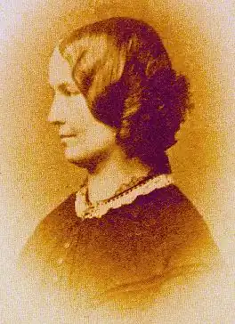

Шарлотта Бронте (21 червня 1816 — 31 березня 1855) (псевдонім Коррер-Бель) — англійська романістка.
Народилася в родині сільського священика. Шарлотті Бронте тільки но виповнилося п'ять років, коли померла її мати, залишивши бідному священику 5 доньок та сина. Батько мало приділяв уваги вихованню дітей, які і так доволі рідко його бачили. Ув'язнені в похмурому церковному будинку, який ізольовано стояв біля цвинтаря, діти були майже покинуті. Подією, що залишила глибокий відкгук у замкнутому житті цієї дивної родини, був вступ старших сестер, Марії та Єлисавети, до школи в Ковен-Бриджі (1824). Непривітна школа, яка не дала ніякого живлення для їхнього розумового розвитку й підірвала їх і без того слабке здоров'я — була яскравими фарбами замальована Шарлоттою в романі "Джен Ейр". Утім, недовго залишалися сестри в школі. Через рік старша, Марія, хвора повернулася додому та померла, а через кілька місяців — і друга сестра, Єлисавета. Залишившись старшою в домі, 9-річна Шарлотта була вимушена взяти на себе обов'язки господарки. У 1835 році Шарлотта поступила на місце гувернантки, але слабке здоров'я і непривабливість життя в чужому домі примусили її відмовитися від цих занять. З матеріальною підтримкою старої тітки Шарлотта та Емілія провели два роки в Брюсселі (1842—44), де перед нервовою та зворушливою Шарлоттою відкрився новий світ.
Навесні 1846 року з'явився невеликий томік їх віршів під псевдонімом Коррер (Шарлотта), Элліс (Емілія) і Актон (Анна) Белль, який залишився непоміченим публікою. Невдача ця не засмутила сестер-письменниць, і вони з тим же захопленням почали писати прозу: Шарлотта написала повість "Учитель", Емілія — "Грозовий перевал", а Анна — "Агнес Грей". Останні дві повісті знайшли собі видавця, a "Учитель" був відкинутий усіма. Попри це, Шарлотта з притаманним їй жаром та пристрастю продовжила свою літературну діяльність. У жовтні 1849 року з'явився її новий роман "Джен Ейр", який відразу завоював успіх, його було перекладено багатьма європейськими мовами. "Шерлі", другий роман Шарлотти Бронте, був написаний при вельми сумних обставинах; у вересні 1848 року помер її брат. В грудні 1848 року померла Емілія, а в травні 1849 — Анна. Коли після виданняя її другого роману (1849) псевдонім Шарлотти Бронте було розкрито, перед Шарлоттою відкрилися двері кращих літературних гуртків Лондону, але для хворобливої і звиклої до самотності дівчини була неприємна загальна увага, і вона більшу частину часу проводила в старому церковному домі в Гаворті. У 1853 році з'явився її останній роман "Вільєтт". Шарлотта вийшла заміж в червні 1854 року, вона прийняла пропозицію помічника свого батька, священика Артура Белла Ніколлса. У січні 1855 року стан її здоров'я різко погіршився. У лютому місяці лікар, що оглядав письменницю, дійшов висновку, що симптоми нездужання свідчать про початок вагітності і не становлять небезпеки для життя. Шарлотту мучила постійна нудота, відсутність апетиту, надзвичайна слабкість, що призвело до швидкого виснаження. Однак, за словами Ніколлса, тільки в останній тиждень березня стало зрозуміло, що Шарлотта помирає. Причина її смерті так і не була встановлена. Шарлотта померла 31 березня 1855 року у віці 38 років. У свідоцтві про її смерть причиною значився туберкульоз, однак, як припускають багато біографів Шарлотти, вона могла померти від зневоднення і виснаження, викликаного важким токсикозом. Письменниця була похована у фамільному склепі в Церкві Св. Михайла, розташованої в Хауорті, Західний Йоркшир, Англія. Після смерті Шарлотти Бронте залишилося кілька незакінчених рукописів. Один з них містить дві глави під заголовком "Емма", його було опубліковано незабаром після смерті автора (Клер Бойлан закінчила книгу в 2003 році, назвавши її "Емма Браун"). Існує ще два фрагменти: "Джон Генрі" (близько 1852 р.) і "Віллі Еллін" (травень-червень 1853).